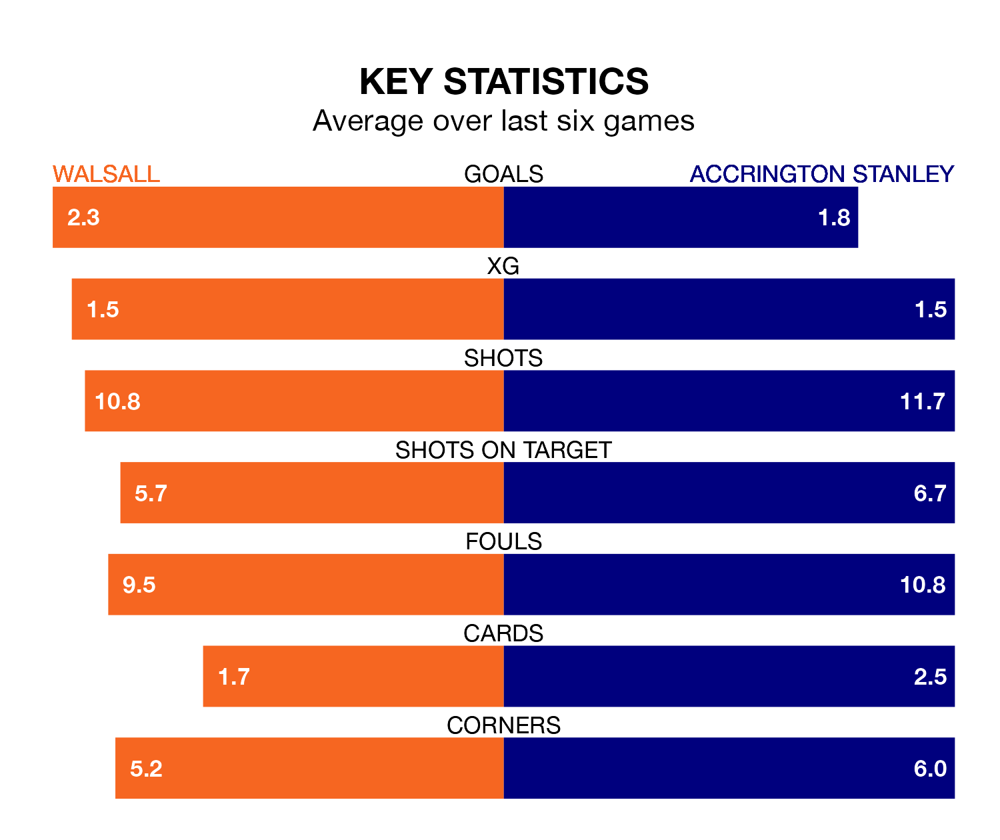

Walsall host Accrington Stanley on Saturday at the Poundland Bescot Stadium in EFL League Two.
In their last league match, on January 13, Walsall lost to Stockport County 3-1 away, with their goal scored by Douglas James-Taylor.
Accrington also lost, 2-1 at home against Gillingham, with Alex Henderson scoring their goals.
With 40 goals in 26 games so far this season, Walsall are scoring at the league's average rate with 1.5 goals per game. But they are conceding at an average rate too, letting in 39 goals at a rate of 1.5 per game.
Accrington are also average scorers, with 1.5 goals per game. They have conceded 1.4 goals per game.
The Saddlers are in reasonable form in EFL League Two, with four wins and two losses from their last six games.
With two wins and two draws over that period, Stanley's form is worse – they have taken eight points from 18, compared to the home side's 12.
Walsall are 13th in the table after 26 games, of which they have won 10 and drawn six, earning 36 points.
The visitors are one place ahead of Walsall in 12th, with 11 wins and five draws putting them on 38 points.
Saturday's match will be refereed by Martin Coy, who has taken charge of seven EFL League Two games so far this season, issuing one red card and booking 36 players. He has awarded two penalties.
The last Walsall game Coy refereed was a 2-1 away loss to Morecambe on August 5. He is yet to oversee a match featuring Accrington this season.
Updated: 10:02 (UTC), 19/01/24